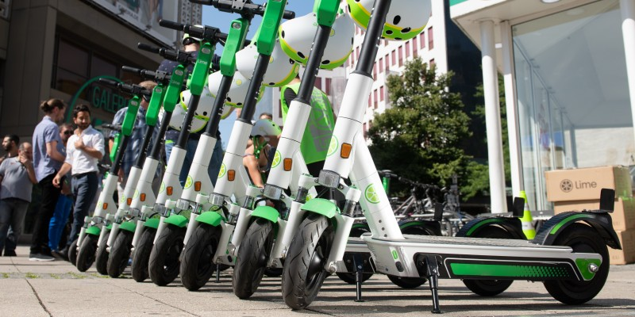
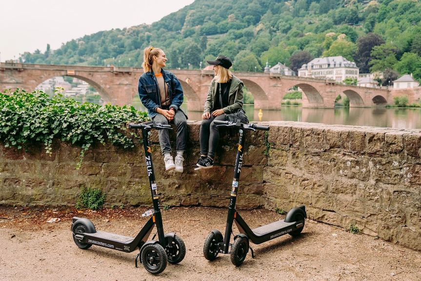

Your confidential advisor for renting and providing of e-scooters.
You have to login yourself to rent the scooters.
Electric kick scooters have generally surpassed gas-engined scooters in popularity since 2000. They usually have two hard small wheels, with a foldable chassis, usually aluminum. Some kick scooters have three or four wheels, or are made of plastic, or are large, or do not fold. High performance trickster scooters made for adults have a much larger front wheel. Electric kick scooters differ from mobility scooters in that they also allow human propulsion, and have no gears. Range typically varies from 5 to 50 km (3 to 31 mi), and maximum speed is around 30 km/h (19 mph). In 2017, some bicycle-sharing companies such as Lime, and some scooter-only companies, like Bird, began offering dockless electric kick scooter sharing services. This segment of the micro-mobility market made large inroads in 2018, with numerous dockless electric scooters appearing in major cities worldwide, sometimes in controversial and contentious unsanctioned roll-outs, such as in San Francisco. In the meanwhile, it becomes more important for electric kick scooter riders to understand the rules when they are on the road.
Rivalled only by folding bikes, electric scooters are perhaps the most portable mode of powered personal transport. Many people would like assisted forms of transport but find them too cumbersome or too technical to be practical. Motorbikes are great, but you need a license and insurance to ride one. Push Bikes are excellent, but you’ll often need to leave it chained up outside and at risk of being stolen, and they’re too large to be considered truly portable. Electric scooters are light and fold up, allowing for easy storage and portability. You can simply pull it along much like you would a small suitcase, meaning you can take it virtually anywhere. Then, when the time comes, you simply unfold it and you’re on your way!
We can’t write an article about the pros of electric scooters without mentioning the environment. The era-defining geopolitical story of our time is climate change. Our collective search for more environmentally-friendly modes of transport and reduced emissions is seeing some progress, with electric scooters being one of the frontrunners so far. They only use a small amount of electricity and don’t emit any emissions, which is better for the air quality in our cities and for the lungs of their residents. As a reliable, affordable, and eco-friendly way of travelling, it doesn’t get any better than an electric scooter.
Travelling around a city and silence never go hand-in-hand. Virtually any method of travelling around comes with a significant amount of noise pollution – cars, motorbikes, buses, trains – they’re all incredibly loud. Even walking can be noisy if you have hard-soled shoes on! Enter the electric scooter; a whisper-quiet mode of transport that’s the fastest and quietest way to get from A to B. We’re sure you or someone you know has had a neighbour who works very early or very late hours, and when they arrive home late at night or early in the morning, the sound of their car or motorbike is a jarring disturbance. If they had an electric scooter, you wouldn’t hear a thing.
Another struggle mankind is facing today is our increasingly sedentary lifestyle. Many of us work in offices or jobs that are largely seated, and most of us will drive or take a train to and from work. Throw in modern communication technology (FaceTime, Skype, Whatsapp, etc) allowing us to socialise without actually going anywhere, and movement becoming less and less necessary, and people struggling to find the time to exercise. With an electric scooter, for smaller journeys that you would usually drive or use public transport, you can get your body moving. Of course, we know riding an electric scooter isn’t a replacement for a workout, but it will activate your core and improve your balance. Using a scooter is a great way of substituting a chair for something a little more active.
Every mode of transport comes with an element of risk. When you travel any faster than walking pace, your risk of having an accident increases – even something as simple as tripping or bumping into someone whilst jogging. Compared with other personal modes of transport, such as cycling, roller skating, or using hoverboards, scooters are potentially the safer option. For one, you can simply step off if you see an imminent collision occurring. This is something you can’t do with bikes or roller skates, and you have immediate access to the brakes, which hoverboards lack. Electric scooters are fast enough to be useful and fun to ride, but give you enough control that you feel safe and secure while riding. It’s probably not surprising, but we can’t speak highly enough of electric scooters! Our very own electric scooter – the Fuze – is a powerful example of how good they can be. With a range of up to 55km, extremely effective Electronic Regenerative Braking, and a top speed of 40km/h, the Fuze is one of the fastest and most exciting ways to get around town. Don’t believe us? Check out our reviews from satisfied customers!
 {% endblock content %}